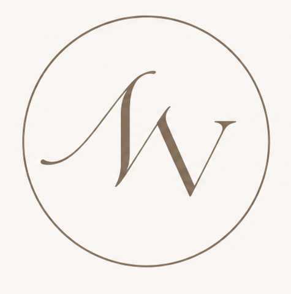
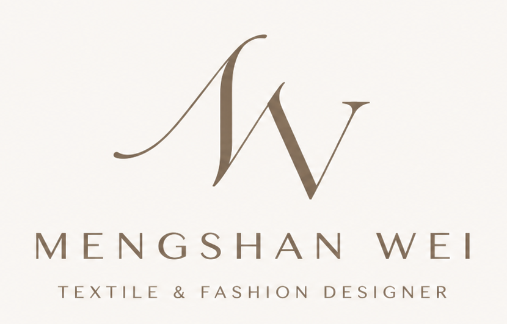

Print Direction
Seasonal color, repeat language, and surface rhythm for fashion collections.

Mengshan Wei
Textile & Fashion Designer
Original print systems, material research, and collection support shaped with a quiet luxury sensibility.
Brand Signature
Seasonal color, repeat language, and surface rhythm for fashion collections.
Screen printing, heat transfer, silkscreen, knitting, and fabric discharge.
Trend research, sourcing, technical sketches, pricing insight, and production coordination.
Selected Index
Profile
Screen printing, heat transfer, silkscreen, printmaking, laser cutting, knitting, fabric discharge, weaving, pattern making, technical sketches, wardrobe design, styling, and photo/video editing.
Adobe Photoshop, Illustrator, InDesign, Microsoft Office.
Experience
Focuses on womenswear design across bras, socks, and activewear, developing product concepts with attention to fit, fabric behavior, silhouette, and commercially ready styling.
Supports seasonal design development through trend research, fabric sourcing, concept execution, production coordination, competitor analysis, pricing insight, and customer feedback synthesis.
Demonstrated drawing and painting techniques across charcoal, pastels, acrylics, watercolors, and oils.
Accomplishments
Recognized by the Interwoven Textile Fair by ITA Show Guide Cover Competition, and selected as a Joe's BlackBook participant supporting the next generation of designers.